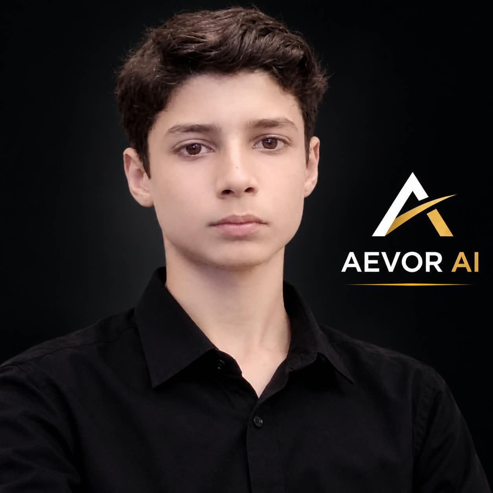

ABOUT OUR PLATFORM
AEVOR AI is an intelligent AI assistant designed to make learning, creativity, coding and everyday tasks easier through artificial intelligence.
Explore AEVOR AIWHO WE ARE
AEVOR AI is a technology project focused on making artificial intelligence more accessible and useful. Our goal is to create a helpful digital assistant that supports users in learning, problem-solving, programming and exploring new ideas.
OUR PURPOSE
Our mission is to use artificial intelligence to simplify everyday digital experiences, support education and encourage innovation.
WHAT WE OFFER
Get help with questions, ideas and everyday problem-solving.
Learn programming concepts and understand code with AI assistance.
Communicate in English, Urdu and Roman Urdu.
Explore new topics and improve your knowledge.
THE PERSON BEHIND THE PROJECT

Founder & CEO
Syed Ali Adnan is the founder of AEVOR AI. He started this project with a vision to explore artificial intelligence and build useful digital technology.
LinkedIn ProfileLOOKING AHEAD
We aim to continuously improve AEVOR AI and explore new possibilities in artificial intelligence, technology and digital innovation.